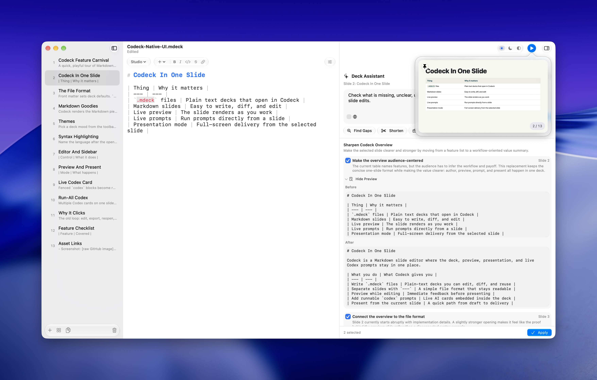
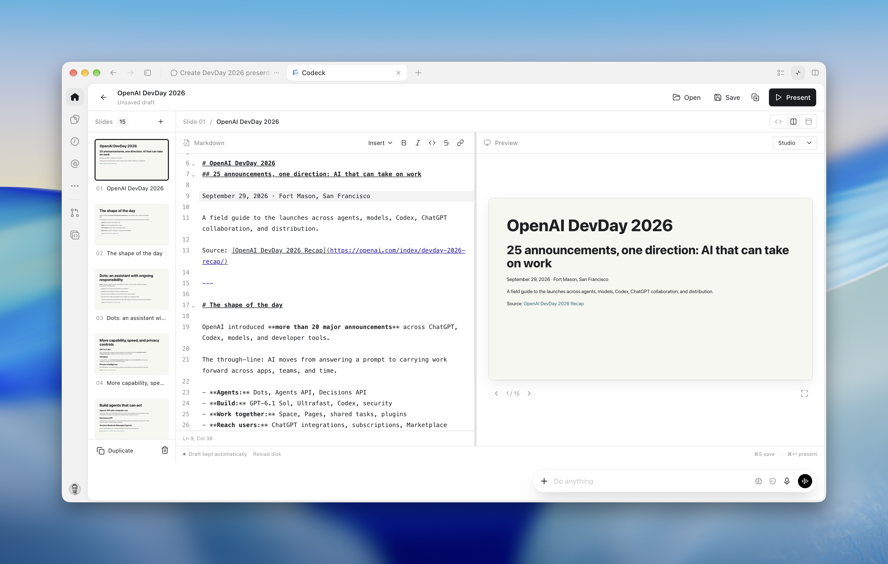

Write in Markdown
Headings, tables, images, GIFs, and highlighted code. Separate slides with --- and keep your source readable.
NATIVE MAC APP / CODEX WORKSPACE
Write, preview, and present Markdown. Run Codex on your slides, or build your deck right inside Codex.

01 / THE MAC APP
A native document app for writing decks, reviewing AI edits, and presenting live.
Headings, tables, images, GIFs, and highlighted code. Separate slides with --- and keep your source readable.
See the rendered slide beside your source. Add, duplicate, and organize slides from the sidebar.
Turn fenced codex blocks into runnable prompt cards. Stream responses live, or run every card on a slide.
Ask the Deck Assistant to find gaps, shorten, polish, or research. Review proposed changes and choose what to apply.
Go fullscreen from the selected slide. Navigate with the arrow keys and press Escape to return to your deck.
Create and edit decks through the file-based MCP server, or enable the live bridge to work with open Mac app windows.
Live cards and the Deck Assistant use your existing Codex login through Codex desktop or the Codex CLI.
02 / THE CODEX PLUGIN
Open Codeck from the Codex sidebar. Write Markdown, see your slides, and use the native Codex composer to create and refine the presentation.
Install the plugin
Highlighted Markdown, slide thumbnails, and editor, split, or preview layouts.
Resume saved drafts. Open and save decks with native macOS file panels.
Start fullscreen from the current slide, with live Codex cards in your deck.
A recorded walkthrough of the Codeck workspace in Codex desktop. Open video
GET THE EXTENSION
Run these commands in your terminal to install from the Codeck repository marketplace.
codex plugin marketplace add lkuczborski/Codeck
codex plugin add codeck@codeck-pluginsRestart Codex desktop, then open Codeck in the sidebar.
Prebuilt plugin: Apple silicon, macOS 14+, and Codex desktop with workspace extensions. Terminal installation requires Codex CLI and Git. The Codeck Mac app and a separate API key aren’t required.
Plugin guide & updates03 / THE DECK FORMAT
Every deck is a readable .mdeck file. Set a theme in the front matter, write Markdown, and use --- between slides. Easy to edit, diff, and version.
---
format: codeck.mdeck
version: 1
theme: studio
---
# From Markdown to presentation.
Keep the source. Present the idea.
- Write with familiar Markdown
- Preview your slides as you edit
- Go fullscreen when you’re ready
---
# Next slide
Add a new idea.Five built-in presentation themes. Try a palette above.
CODECK